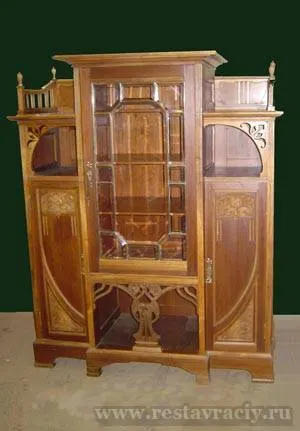
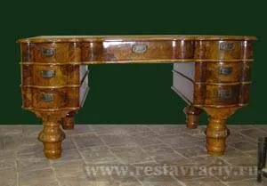
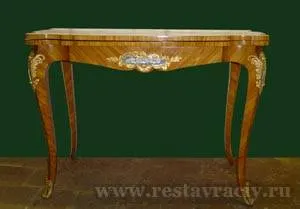
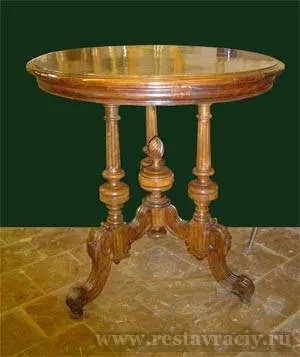

Мебель
Ремонт корпусной мебели
Столярная мастерская производит ремонт корпусной мебели из дерева, ДСП, МДФ и других композитных материалов.


О чём рассказывает мастерская
- Ремонт корпусной мебели из дерева
- Чем отличается ремонт корпусной мебели от реставрации
- Ремонт корпусной мебели из ДСП и МДФ.
- Модульная мебель
- Секционная мебель
- Гарнитурная мебель
- Комплектная мебель
- Наборная мебель
- Системная мебель
- Комбинированная мебель
В материале мастерской
Фотографии и детали

 Открыть снимок у мастерской
Открыть снимок у мастерской 


Открыть снимок у мастерской


Открыть снимок у мастерской


Открыть снимок у мастерской
Посмотреть снимки с сайта мастерской 6
Оригинальные фотографии откроются здесь с сайта мастерской.
 Открыть снимок у мастерской
Открыть снимок у мастерской  Открыть снимок у мастерской
Открыть снимок у мастерской  Открыть снимок у мастерской
Открыть снимок у мастерской  Открыть снимок у мастерской
Открыть снимок у мастерской  Открыть снимок у мастерской
Открыть снимок у мастерской  Открыть снимок у мастерской
Открыть снимок у мастерской Есть похожая вещь?
Подберите ракурсы для предварительной оценки.